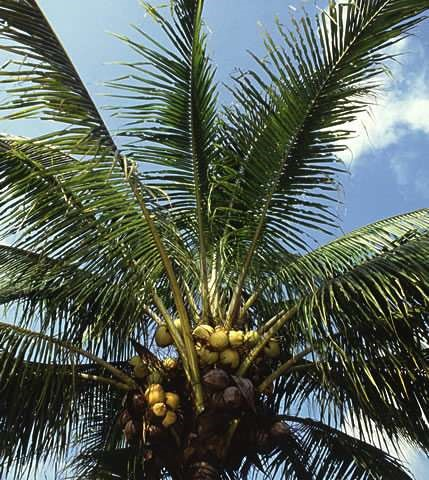
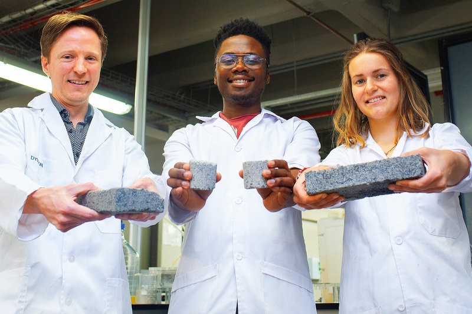
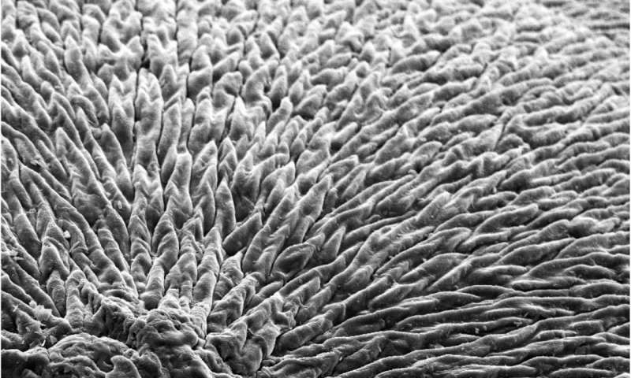
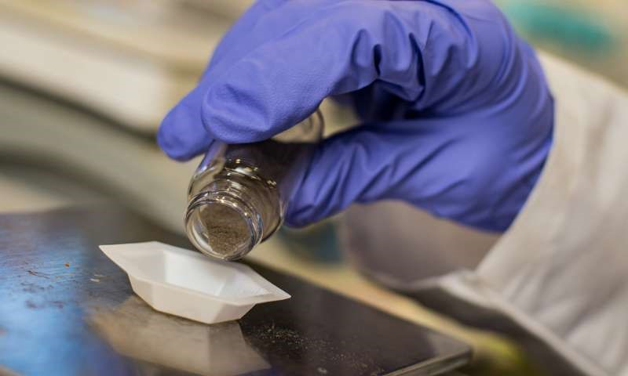
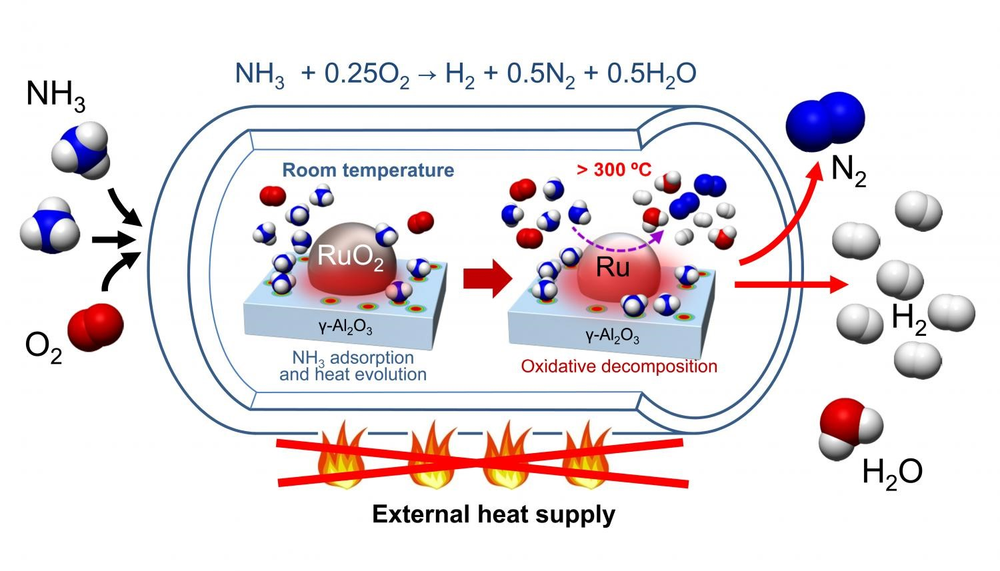
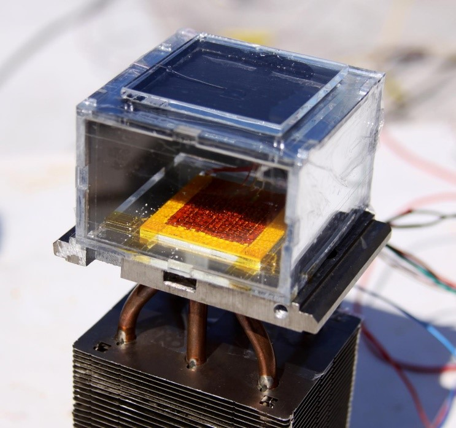
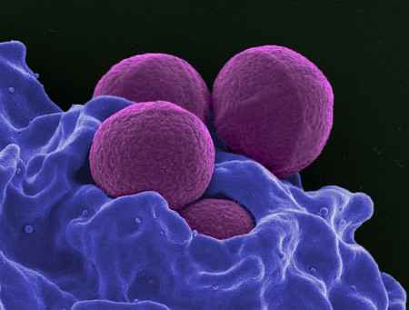
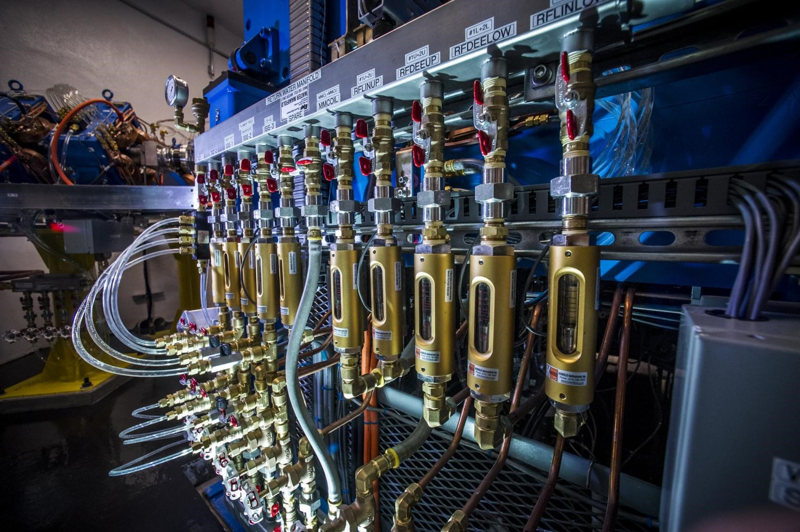
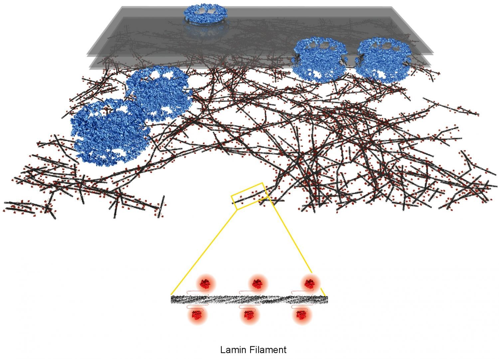
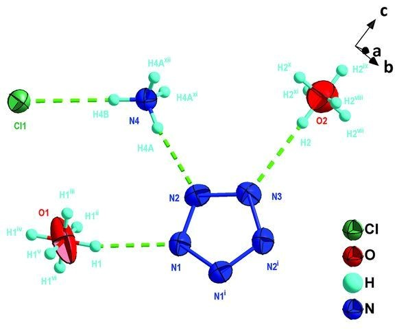

HİNDİSTAN CEVİZİ YAĞI BİLEŞİKLERİ, BÖCEKLERİ TEHLİKELİ KİMYASAL DEET'TEN DAHA ETKİLİ UZAKLAŞTIRIYOR
ABD tarım bakanlığının yaptığı yeni bir araştırmaya göre Hindistan cevizi yağı kan emici böceklere karşı DEET’den (sinek kovucularda kullanılan bir kimyasal) daha etkili olduğunu belirtti.
Böcek ısırıkları ile bulaşan hastalıkları önlemek için kullanılan böcek kovucu ilaçlarda son 60 yıldır bilinen en etkili kimyasal olan DEET kullanılmaktadır. Bununla birlikte, DEET gibi sentetik kovucular ve böcek öldürücüler hakkında artan düzenlemeler ve artan kamu sağlığı endişeleri, araştırmacıları daha etkili ve daha uzun süren bitki bazlı kovucular geliştirmeye yöneltti...
Devamını Okumak için Tıklayınız.İNSAN İDRARINDAN ÜRETİLEN DÜNYANIN İLK BİYO-TUĞLALARI
Cape Town Üniversitesi (UCT) yüksek lisans öğrencisi inşaat mühendisliği Suzanne Lambert, dünyanın ilk insan idrarından elde edilen biyo-tuğlasını elde etiklerini açıklayarak, bu buluş geri kazanımında yenilikçi bir değişimin sinyali olduğunu söyledi.
Biyo-tuğlalar mikrobik karbonat çökeltmesi adı verilen doğal bir süreçten oluşur...
Devamını Okumak için Tıklayınız.BİLİM ADAMLARI DİŞ MİNESİNİ REJENERE EDEBİLECEK MATERYALLER GELİŞTİRİYOR
Londradaki Queen Mary Universitesi araştırmacıları, diş minesini ve kemiği gibi sert dokuları canlandırabilecek mineralli materyaller üretmenin yeni bir yolunu geliştirdiler.
Dişlerimizin dış kısmında yer alan emaye, vücuttaki en sert dokudur ve dişlerimizin, ısırma kuvvetlerine, asitli yiyeceklere ve içeceklere ve aşırı sıcaklıklara maruz kalmasına rağmen, ömrünün büyük bir bölümünde işlev görmesini sağlar. Bu dikkate değer performans, yüksek düzeyde organize edilmiş yapısından kaynaklanmaktadır...
Devamını Okumak için Tıklayınız.TOKSİK NİTRATLARI HAVAYA VE SUYA DÖNÜŞTÜREN KATALİZÖR
Rice Üniversitesi'ndeki Nanoteknoloji Etkin Su Arıtımı (NEWT) Merkezi mühendisleri, toksik nitratları havaya ve suya dönüştürerek temizleyen bir katalizör buldu.
Rice Üniversitesi kimya mühendisi Michael Wong; ”Nitratlar ağırlıklı olarak dünyanın dört bir yanındaki tarım arazilerindeki nitratlı gübrelerinin yeraltı sularına karışmasıyla ortaya çıkar,” dedi. “Nitratlar hem çevresel hem de çok zehirli olduklarından sağlık açısından tehlikelidirler...
Devamını Okumak için Tıklayınız.KARBON İÇERMEYEN AMONYAKTAN HİDROJEN GAZI ÜRETİMİ İÇİN KATALİZÖR
Hidrojen, özellikle yakıt hücresi teknolojisi için uygulanan alternatif bir temiz enerji kaynağı olma potansiyeline sahiptir. Mevcut yakıt kaynakları, karbon içeren fosil yakıtları veya karbon içeren organik molekülleri içerir ve bu da bir sera gazı fazlası olan CO2 üretir. Japonya'daki ulusal girişimler de dâhil olmak üzere birçok girişim, alternatif yakıt kaynakları kullanarak düşük karbonlu bir kullanım toplumu yaratmayı hedeflemektedir.
Japonya'daki Enerji Dağıtıcıları girişimi, özellikle hidrojeni etkili bir şekilde depolamak ve taşımanın yollarını arayan ulusal bir projedir. Bunu yapmanın bir yolu amonyağı hidrojen kaynağı olarak kullanmaktır. Bununla birlikte, amonyağın parçalanması için etkili bir prosesin bulunmasının zor olduğu kanıtlamıştır, çünkü amonyağın parçalanması için katalitik proses, aşırı pahalı olabilecek sürekli bir ısı ilavesi gerektirir.
Devamını Okumak için Tıklayınız.GÜNEŞ ENERJİSİ İLE ÇALIŞAN KURU HAVADA BİLE SU ÜRETEN CİHAZ.
Her evin, yalnızca güneşin gücünü kullanarak, kuru veya çöl ortamlarında bile, evin ihtiyaç duyduğu suyu üreten bir aleti olan bir geleceğini hayal edin.
Güneş enerjili biçerdöver, Berkeley Kaliforniya Üniversitesi'nde üretilen özel bir materyal - metal-organik bir çerçeve (a metal-organic framework-MOF) kullanılarak tasarlandı.
Berkeley'de Lawrence Berkeley Ulusal Laboratuvarında kimya alanında fakülte bilim adamı Ömer Yaghi, "Bu, düşük nemde havadan su toplamanın uzun süredir devam eden meydan okumasında önemli bir gelişmedir" dedi. "Şu anda bunu yapmanın başka yolu yok, ekstra enerji kullanımı dışında evdeki elektrikli nem alma cihazları çok pahalı su üretiyor."
Devamını Okumak için Tıklayınız.“SUPERBUG” ARTIK YETER. AKÇAAĞAÇ ŞURUBU, ANTİBİYOTİĞİN ETKİSİNİ ARTTIRIYOR.
Antibiyotikler her gün hayat kurtarır, ancak her yerde bulunması bazen dezavantaja neden olur. Yüksek dozlar, enfeksiyona neden olan bakterilerin yanı sıra sağlıklı hücreleri de öldürebilir; aynı zamanda, bilinen antibiyotiklere artık cevap vermeyen "superbug" yaratmaya da teşvik eder. Şimdi,Araştırmacılar sağlıktan fedakârlık etmeden antibiyotik kullanımını azaltmanın doğal bir yolunu bulmuş olabilirler: bu ilaçların potansiyelini önemli ölçüde artıran bir akçaağaç şurubu.
Devamını Okumak için Tıklayınız.ARAŞTIRMACILAR, VÜCUTTAKİ FAST-FOOD PAKETLEYİCİLERİNİN TEHLİKELİ KİMYASALLARINI İZLEYEBİLİRLER
Alabama Üniversitesi'nden Birmingham Üniversitesi Tıp Fakültesi ve Notre Dame Üniversitesi araştırma ekipleri, araştırmacıların üç farklı perflorlu ve poliflorlu alkil maddesini radyoaktif olarak etiketlemesine ve vücuda girdiklerinde bu kimyasalların vücut içindeki takibine olanak tanıyan yeni bir yöntem geliştirdi.
Bu, insan vücuduna zararlı olduğu bilinen bu PFAS'ların belirlenmesinde ve izlenmesinde önemli ve zamanında bir gelişmedir ve geçen ayın, birçok popüler zincir restoranında fast-food ambalaj kağıdında yoğun olarak kullanıldığı bulunmuştur.
Devamını Okumak için Tıklayınız.İLK KEZ ORTAYA ÇIKAN HÜCRE NÜKLEOSKELETRESİNİN MOLEKÜLER YAPISI
Zürih Üniversitesi'nden biyologlar, 3 boyutlu elektron mikroskobu kullanarak, moleküler çözünürlükte hücre çekirdeği tabakasının mimarisini ilk defa aydınlatmayı başardı. Bu iskelet, yüksek ökaryotlarda hücre çekirdeğini sabitleştirir ve genetik materyali organize etme, aktive etme ve çoğaltma işlemlerine katılır. Laminin temel bileşeni olan lamin genindeki mutasyonların neden olduğu kas distrofisi ve erken yaşlanma gibi hastalıklar artık daha etkili bir şekilde incelenebilir.
Devamını Okumak için Tıklayınız.ARAŞTIRMACILAR PENTAZOLAT ANYONUNU KARARLI TUZUN BİR PARÇASI OLARAK NİTELENDİRİYOR.
Pentazol molekülü ve onun anyonu olan siklo-N5- neredeyse bir yüzyıl boyunca araştırmacılar tarafından anlaşılamadı. Pentazol anyonu oldukça kararsızdır ve dökme halde imal edilemez. Nanjing Bilim ve Teknoloji Üniversitesi'nden araştırmacılar ve Liaoning Üniversitesi Bilim ve Teknoloji Üniversitesi, 117oC'ye kadar sabit olan pentazol anyonu içeren bir tuz sentezi geliştirdiler.
Pentazol ve onun anyonu, en azından moleküller için karamsar bir geçmişi vardır. Pentazolun 1915'te bir aril-pentazol olarak izole edildiği düşünülüyordu, ancak birkaç yıl sonra çürütüldü. Sonra, 1950'li yıllarda, bir grup araştırmacı pentazolun başka bir tepki için bir ara madde olarak tanımlanmasını başarmıştı. Daha sonra araştırmacılar, rota yakıtı olarak hidrazinin olası bir alternatifi olarak N5+ ve N5-'i birleştirmeyi düşünüyorlardı.
Devamını Okumak için Tıklayınız.


Sitemizin tüm hakları Çiçek Şirketlerin'e aittir.